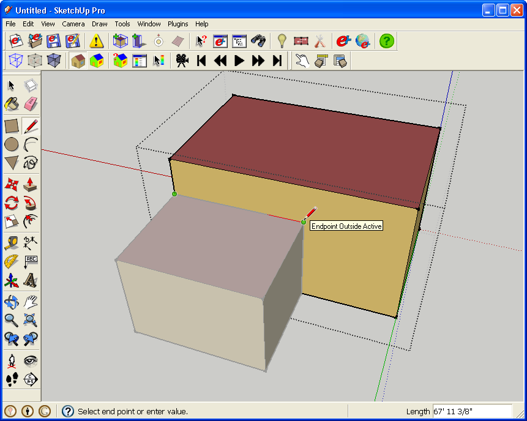
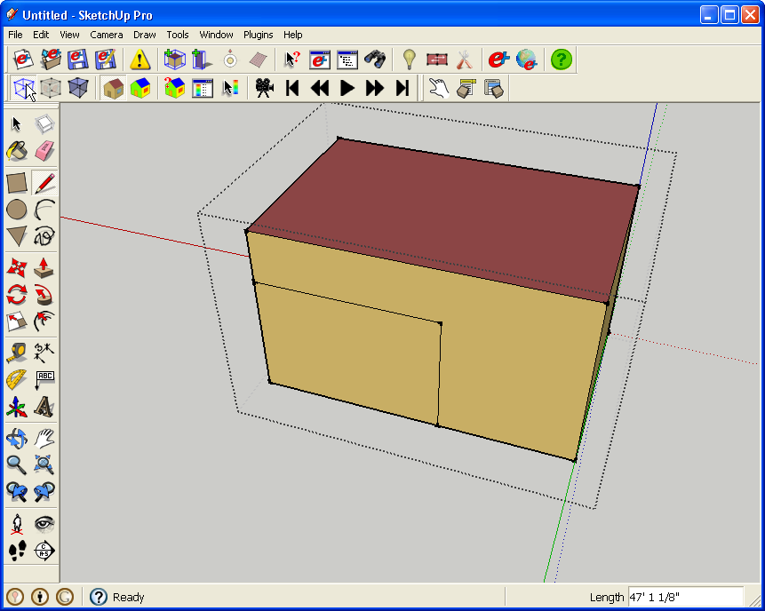
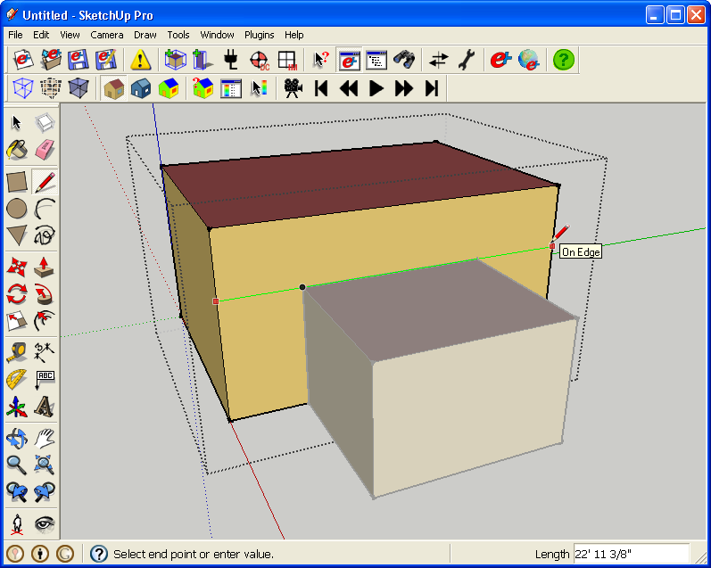
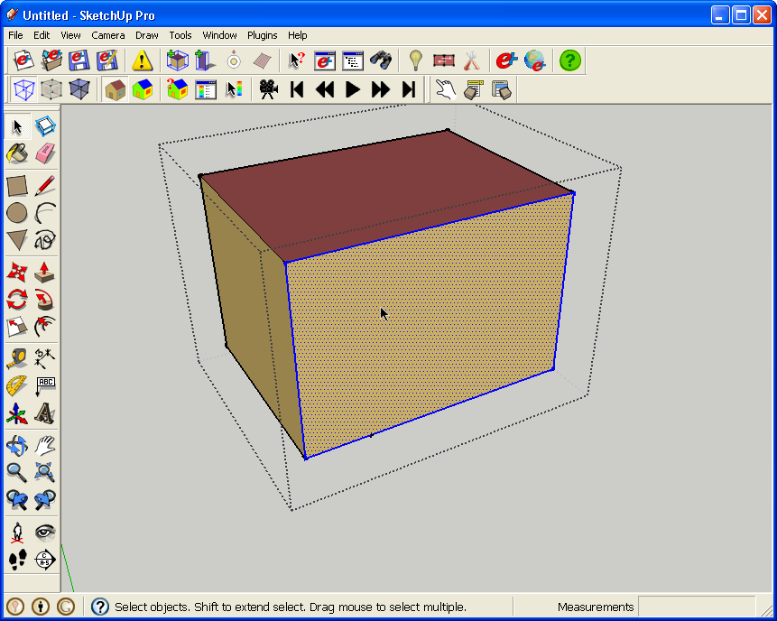
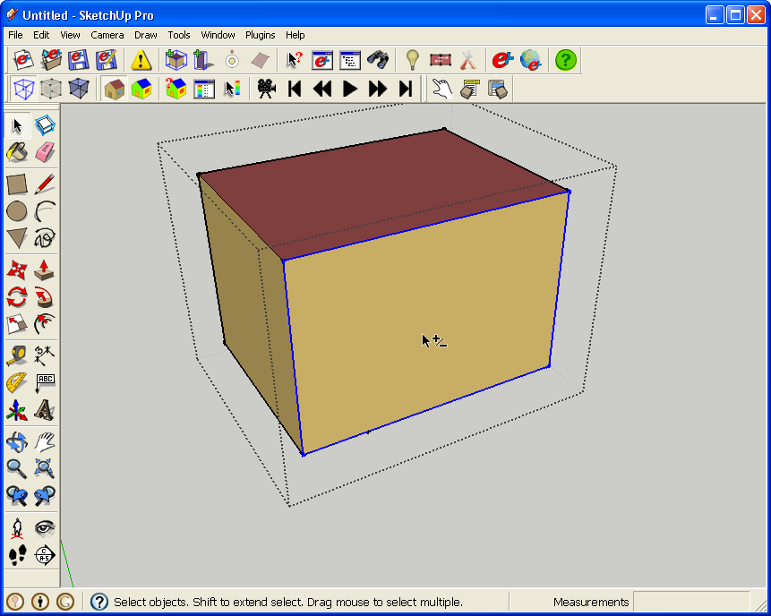
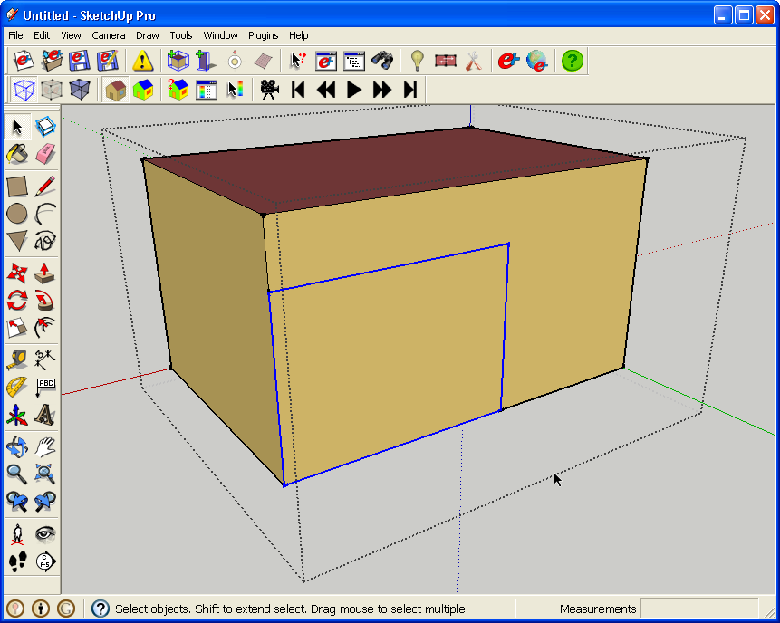

Matching Surfaces
Drawing the surfaces to be matched
- OpenStudio requires that vertices line up exactly. In more technical terms, OpenStudio requires second level space boundaries.
- In some cases it may help to save your IDF and re-open it before using the surface matching tool as OpenStudio does some geometry clean-up when it opens a file.
- You should always verify the results of the surface matching operation using the Surface Search Tool, Object Info Dialog, EnergyPlus output, or some other means.
- Two methods for drawing surfaces follow:
Method 1
- This method uses SketchUp's drawing tools and inference locks.
- Enter into the zone where you want to draw your new surface, but leave the other zones visible.
- Use the line tool to draw lines that snap to objects in another zone. SketchUp will indicate this with a pop-up note that reads "Endpoint Outside Activity".
- You may have to navigate around the model with the pan and orbit tools to draw all the edges of your surface.
- If geometries in other zones are in your way, you can temporarily hide them. Select them and then right-click->hide, or go to "hide" in the edit menu.
(Credit: David Goldwasser/NREL)
This drawing uses line tool and SketchUp's inference locks to snap to geometry in other EnergyPlus zones.

(Credit: David Goldwasser/NREL)
Click on second point in another EnergyPlus zone
(Credit: David Goldwasser/NREL)
Click on the third point in another EnergyPlus zone.

(Credit: David Goldwasser/NREL)
Final surface in EnergyPlus zone.
- The example above has a smaller zone sharing two edges with a larger zone. If instead the smaller zone only shared one edge with the larger zone, if for example it was centered horizontally with the larger zone, then you have to do things a little differently.
- You would have to first split the base surface into two base surfaces by adding an edge all the way across the larger base surface (pictured below). Then you could draw the vertical edges to complete the surface to be matched. If you don't create the horizontal edge first OpenStudio could interpret your new surface as a subsurface instead of a base surface; as if it was a door vs. a wall.
- If you use method two in this scenario, you would still have to draw the full length horizontal edge before pasting in the copy of the surface edges.

(Credit: David Goldwasser/NREL)
Method 2
- This method uses "copy" and then "paste in place" instead of manually drawing the second surface.
- Double click the surface you want to duplicate in another zone.
- Select the face and its bounding edges.
- Shift-click on the face to unselect it (this prevents the face-normal of the new copy from being reversed), but leave the edges selected.
- Copy the selection, exit from the current zone, and enter into the zone that needs the new surface. Choose Paste in Place (edit/paste in place). There is no default shortcut set for "paste in place", but a separate tutorial shows you how to create your own shortcuts.

(Credit: David Goldwasser/NREL)
Select a face and its edges by double clicking.

(Credit: David Goldwasser/NREL)
Shift-click to unselect the face.

(Credit: David Goldwasser/NREL)
Here you can see the resulting edges and surface in the second EnergyPlus Zone.
Surface Matching Tool
- Once your surfaces are drawn, you can use the Surface Matching Tool to match them together.
- You can match surfaces and subsurfaces for selected objects or for all objects in the model. This sets the boundary condition of each surface to point to each other and reassigns the default interior construction for that type.
- You can also use this tool to unmatch surfaces. This resets their boundary conditions to be outdoors or ground and reassigns the default exterior construction for that type.
- OpenStudio may not find some non-rectangular surfaces. You can match these manually using the Object Information Window. Change the Outside Boundary Condition to "Surface" and then identify the matching Outside Boundary Object.
- You can obtain a report of the last match or unmatch performed in comma separated value (CSV) format to verify the operations that have been performed.
Workflows for Surface Matching
- You can match surfaces together as you make them or you can create all surfaces for your model and match them at the end.
- After matching, you can verify correct results using the Surface Search Tool to verify correct results. You can, for example, check that no surfaces with outdoor boundary conditions are inside the building, and vice versa.
- As an alternative to the Surface Matching tool, you can manually match surfaces, using the Object Info Tool. Set the Outside Boundary Condition to "Surface" and then identify the Outside Boundary Object that you wan to match with. In most cases your matches are in pairs. So if you match surface "A" to surface "B", then surface "B" should also refer to surface "A" as it's Outside Boundary Object.
- Surface Matching may not properly match some non rectangular surfaces. If this happens you can manually match the surfaces (see above). An alternative workflow would be to draw them as rectangular surfaces, match them, and then adjust the geometry.
- If your surface is a trapezoid (like perimeter zone in a 5-zone plan) then you can generally avoid the issue by drawing your zone origin at the 2nd of the two acute angles. (2nd when using the right hand rule to draw points clockwise). Then use the line tool to draw your shape staring with the second acute angle(same point as zone origin). Once you do this don't move your zones around. Copying them up to create multiple floors should be fine. The draw order of your vertices will be: acute vertex>obtuse vertex>obtuse vertex>acute vertex.
|